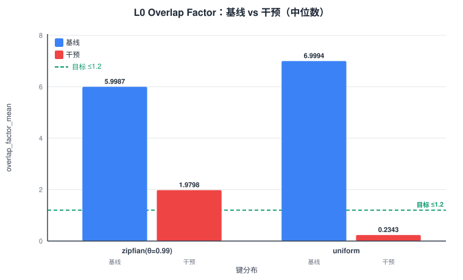
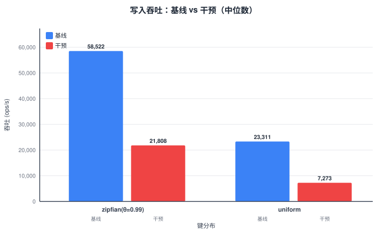
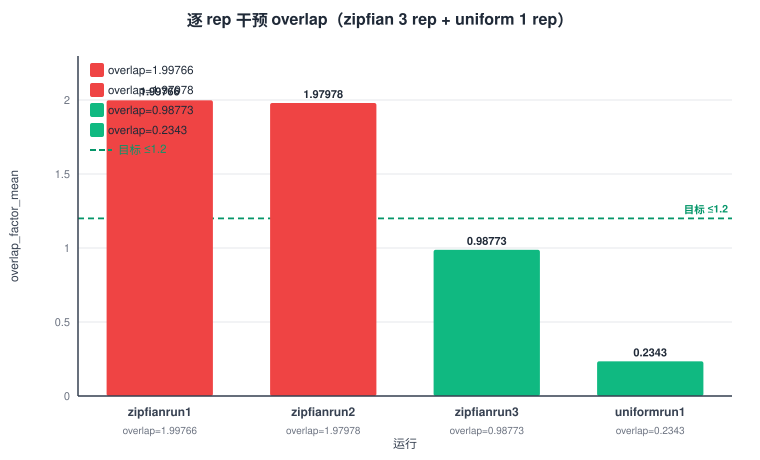
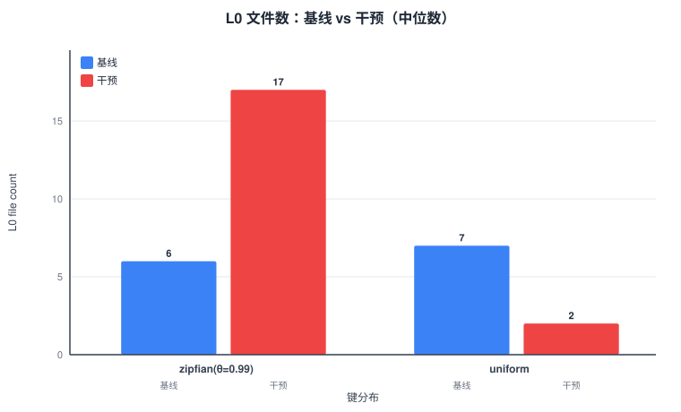

exp1_report.json本实验验证 H2：L0 SST 之间的 key range 重叠源于写入准入。基线（vanilla db_bench）overlap ≥ 2.0；干预（flush 时分区补丁，P=16）预期 overlap ≤ 1.2、compaction 读降 ≥ 40%、吞吐回退 ≤ 5%。
结果：overlap 下降显著（zipfian −67%、uniform −96.7%），但 3 项验收 FAIL——intervention overlap 中位数 1.9798 > 1.2 目标（run3=0.99 和 uniform=0.23 达标）；compaction 读反增 166.3%（2.66×基线）；吞吐回退 62.74%（L0 文件数暴涨 → level0_slowdown_writes stall）。回退方案 flush 时分区不可行，主方案 PartitionedMemTable 有必要性。
source/rocksdb-exp0-tools/build/db_bench），仅工具层 zipfian 补丁，引擎零改动source/rocksdb-exp1-partition/build/db_bench），在 db/flush_job.cc 的 WriteLevel0Table 中按 L1 文件边界将单 MemTable 迭代流分流到 ≤P=16 个 TableBuilderGetLiveFilesMetaData 统计 L0 覆盖数（level==0）；链接 vanilla lib 只读打开rocksdb.compact.read.bytes ticker（全层级），非 L0→L1 特定口径。LOG per-level 口径仅 run3 可用（LOG 被 overlap_probe 覆盖问题，已在 measurement_method 声明）point_query_l0_files_checked_mean = overlap_factor_mean（同一覆盖计数），与 readrandom --perf_level=4 PerfContext 交叉验证| 组 | rep | overlap_mean | overlap_p99 | L0 文件数 | compaction_read (MB) | 吞吐 (ops/s) | flush_partition_count |
|---|---|---|---|---|---|---|---|
| baseline | 1 | 8.99813 | 9 | 9 | 145,339.75 | 58,738 | 0 |
| baseline | 2 | 5.99874 | 6 | 6 | 145,279.49 | 55,992 | 0 |
| baseline | 3 | 3.99934 | 4 | 4 | 145,658.14 | 58,522 | 0 |
| intervention | 1 | 1.99766 | 2 | 17 | 393,955.54 | 23,010 | 0 |
| intervention | 2 | 1.97978 | 2 | 17 | 384,493.81 | 21,808 | 0 |
| intervention | 3 | 0.98773 | 1 | 1 | 387,052.77 | 21,804 | 912 |
run3 overlap=0.99（L0=1）达标：compaction 追上时 P=16 可满足 ≤1.2 目标。runs 1-2 overlap≈1.98（L0=17）：多轮 flush 积聚后 compaction 未追上。
| 组 | rep | overlap_mean | overlap_p99 | L0 文件数 | compaction_read (MB) | 吞吐 (ops/s) | flush_partition_count |
|---|---|---|---|---|---|---|---|
| baseline | 1 | 6.99943 | 7 | 7 | 388,444.17 | 23,311 | 0 |
| intervention | 1 | 0.23429 | 1 | 2 | 1,152,814.46 | 7,273 | 1,018 |
uniform overlap=0.23 达标（−96.7%）：均匀分布分区效果更佳。声明：uniform 仅 1 rep（非中位数），因运行时长约 zipfian 的 2.5 倍。
| 指标 | baseline | intervention | 变化 |
|---|---|---|---|
| overlap_factor_mean | 5.9987 | 1.9798 | −67.0% |
| overlap_factor_p99 | 6 | 2 | −66.7% |
| L0 文件数 | 6 | 17 | +183.3% |
| compaction_read (MB) | 145,339.75 | 387,052.77 | +166.3% (2.66×) |
| 吞吐 (ops/s) | 58,522 | 21,808 | −62.74% |
| point_query_l0_files_checked_mean | 5.9987 | 1.9798 | −67.0% |




<img> 渲染，结构等同 PNG。生成脚本：charts/gen_exp1_charts.py。| 验收项 | 计算值 | 阈值 | 判定 |
|---|---|---|---|
| V1 baseline overlap ≥ 2.0 | 5.9987 ≥ 2.0 | ≥2.0 | PASS |
| V2 intervention overlap ≤ 1.2 | 1.9798 > 1.2 | ≤1.2 | FAIL |
| V3 compaction 读降 ≥ 40% | (145339.75−387052.77)/145339.75 × 100 = −166.3% | ≥40% | FAIL |
| V4 吞吐回退 ≤ 5% | (58522−21808)/58522 × 100 = 62.74% | ≤5% | FAIL |
4 项中 3 项 FAIL，1 项 PASS ⇒ 整体 FAIL（与 exp1_report.json.failures_or_na 一致）。
| 条件 | 数值 | 判定 |
|---|---|---|
| zipfian run3 overlap ≤ 1.2 | 0.98773 ≤ 1.2 | PASS |
| uniform overlap ≤ 1.2 | 0.23429 ≤ 1.2 | PASS |
| zipfian overlap 下降幅度 | −67.0%（5.9987→1.9798） | 显著但未达标 |
| uniform overlap 下降幅度 | −96.7%（6.9994→0.2343） | 达标 |
exp_design/pre_experiment/report/exp1_report.json
原始数据output/pre_exp/exp1/raw/（8 个 run 目录：stdout/stderr/LOG/LOG_fillrandom/overlap_probe.json/compact_read_bytes.txt）
stall 数据intervention_zipfian_vs1024/run3/LOG_fillrandom（手动保存）
补丁exp_design/pre_experiment/code/exp1_l0_overlap/patches/0001-flush-partition.patch + 0002-zipfian.patch
图表脚本exp_design/pre_experiment/report/charts/gen_exp1_charts.py
图表exp_design/pre_experiment/report/charts/exp1_*.svg（4 张）
冻结配置exp_design/pre_experiment/code/exp0_flush_cost/workload_config.json